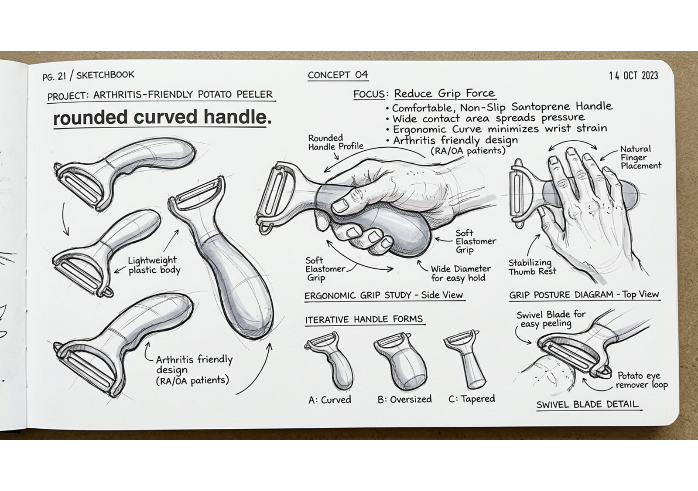
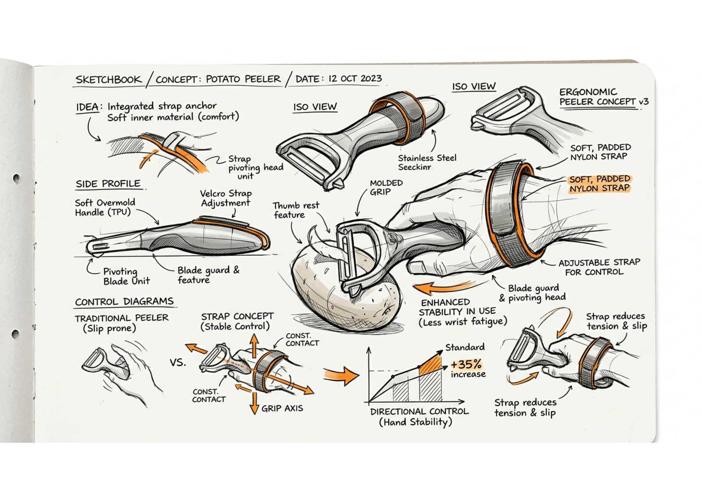
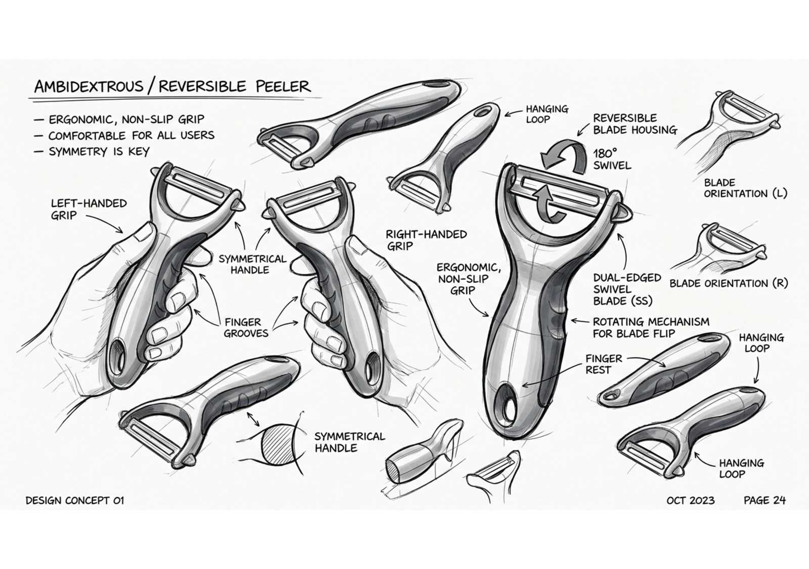
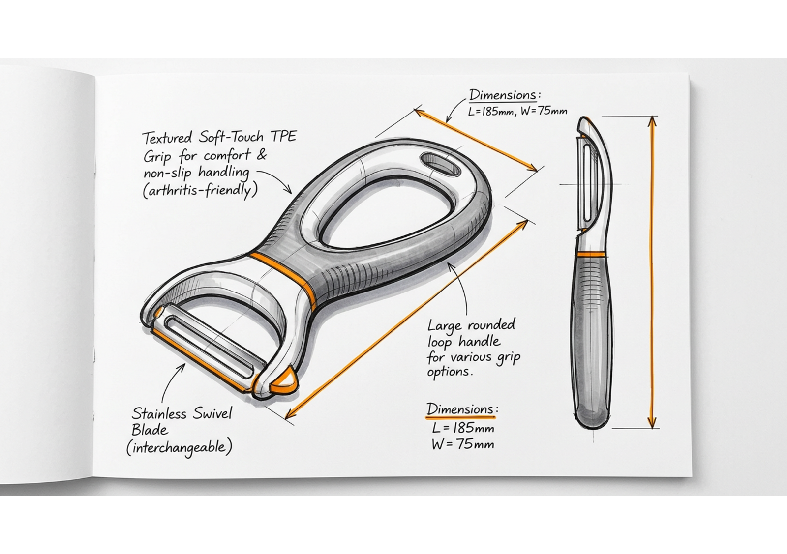

↝
User conversations
6 users. 4 kitchens. A map of real hand fatigue.
field note / 00101 Product design / case study
Grip & Peel is an arthritis-friendly potato peeler designed to make everyday kitchen tasks feel more comfortable, secure, and independent.
Peeling a potato should not be a test of hand strength.
This project began with a simple observation: everyday kitchen tools often assume a strong, pain-free grip. The brief was to design a low-force peeler that supports people with arthritis without making the object feel medical or complicated.
Four rounds of exploration shaped a peeler around real grip patterns, reduced strength, and the need for confidence at the counter.




Design for the
hard-to-hold.
We looked closely at grip, pressure, control, and the small moments that make a tool frustrating to use.
6 users. 4 kitchens. A map of real hand fatigue.
field note / 001We compared peeler handles, force points, and failure moments.
field note / 014The best prototype is the one that feels safe in use.
field note / 022“I need something I can hold
without thinking about my hands.”
The first prototype gave the palm a broad, rounded landing. It reduced pinch force and made the peeling motion feel more controlled.
01 / A handle with a landingA secure grip. Less force. One familiar motion made easier for people living with arthritis.